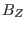
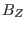

Axisymmetric magnetic field
Due to the divergence-free nature of magnetic field, i.e.,
 , magnetic field can be generally expressed as the curl of a
vector potential,
, magnetic field can be generally expressed as the curl of a
vector potential,
We consider axisymmetric magnetic field. The axial symmetry means that, when
expressed in the cylindrical coordinate system
 , the components
of
, the components
of
 , namely , , and
, namely , , and  , are all independent of
, are all independent of
 . For this case, it can be proved that an axisymmetric vector potential
. For this case, it can be proved that an axisymmetric vector potential
 suffices for expressing the magnetic field, i.e., all the
components of the vector potential
can also be taken independent
of . Using this, Eq. (1) is written
suffices for expressing the magnetic field, i.e., all the
components of the vector potential
can also be taken independent
of . Using this, Eq. (1) is written
In tokamak literature,
 direction is called the
toroidal direction and
direction is called the
toroidal direction and  plane is called the poloidal plane. Equation
(2) indicates that the two poloidal components of
,
namely and , are determined by a single component of
,
namely . This motivates us to define a function
plane is called the poloidal plane. Equation
(2) indicates that the two poloidal components of
,
namely and , are determined by a single component of
,
namely . This motivates us to define a function
 by
by
Then Eq. (2) implies the poloidal components, and , can
be written as
and
It is obvious that it is the property of being axisymmetric and
divergence-free that enables the two components of
, and
, to be expressed in terms of a single function
. (The
function  is usually called the ``poloidal flux function'' in tokamak
literature. The reason for this nomenclature will become clear when we discuss
the physical meaning of in Sec. 1.4.) Furthermore, it is ready
to verify is constant along a magnetic field line, i.e.
. [Proof:
is usually called the ``poloidal flux function'' in tokamak
literature. The reason for this nomenclature will become clear when we discuss
the physical meaning of in Sec. 1.4.) Furthermore, it is ready
to verify is constant along a magnetic field line, i.e.
. [Proof:
] For later use, define
, then the toroidal
component of the magnetic field is written
Using Eqs. (4), (5), and (7), a general
axisymmetric magnetic field can be written as
Subsections
yj
2018-03-09